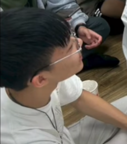

| 劉子新 |
 |
|
| 簡詣珅 | ||
| 尤昍禹 | ||
| 王新倫 | |
大家好我名字叫王新倫，今年讀國二，十三歲，我喜歡打籃球和羽毛球，喜歡吃咖哩飯，不喜歡吃茄子和絲瓜，我覺得我自己活潑開朗、樂於助人。 |
| 余泓佑 | |
我是一個開朗的國中生，平時喜歡運動和打籃球 (雖然打得很爛) ，也喜歡組鋼彈模型。個性有點害羞，但會努力和同學相處，希望能不斷進步。 |
| 李思賢 | ||
| 李浩綸 | ||
| 李浩滕 | 我就讀銘傳國中,我喜歡做一些有的沒的東西,也喜歡騎腳踏車,和養昆蟲觀察大自然,不喜歡別仍多管閒事和大聲責罵我. | |
| 林佑穎 | ||
| 張宸恩 | ||
| 張凱政 | 我14歲 男的 西元2011年民國100年出生 我生日11月1號 農曆10月6號 我喜歡打球 我不會吹直笛 !!! | |
| 蕭賢銳 | 我是蕭賢銳，我就讀銘傳國中，我喜歡看有趣的書，也喜歡聽音樂，尤其是周杰倫。我最喜歡的科目是國文和歷史還有體育。我覺得國文很奧妙，成語字詞的典故也很有趣，歷史可以了解稻古人的生活和一些趣事。我會彈鋼琴和打桌球。 | |
| 蘇贊允 | |
我是蘇贊允，我是一個國中生，我喜歡運動，我最喜歡的歌手是周杰倫，希望在他退休之前，還能再出一張完美的專輯 |